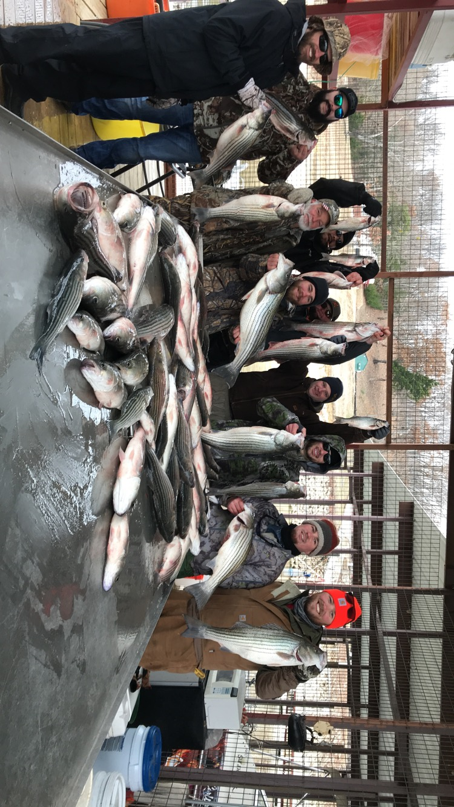
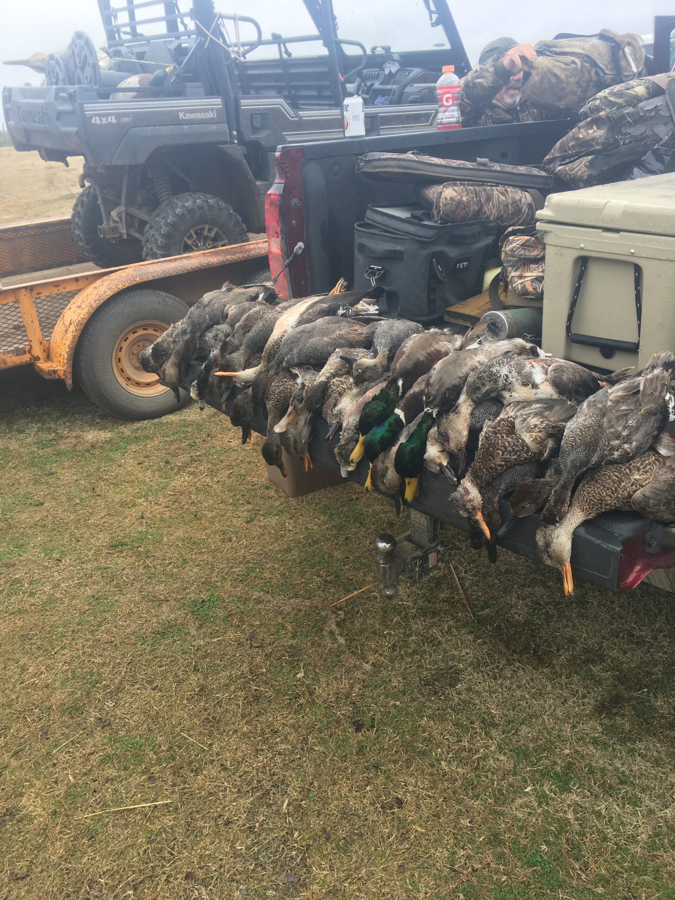
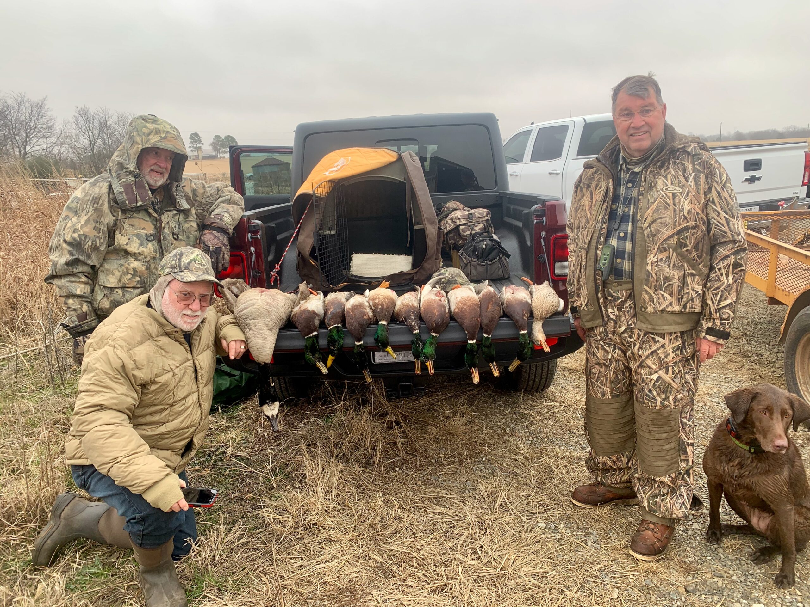
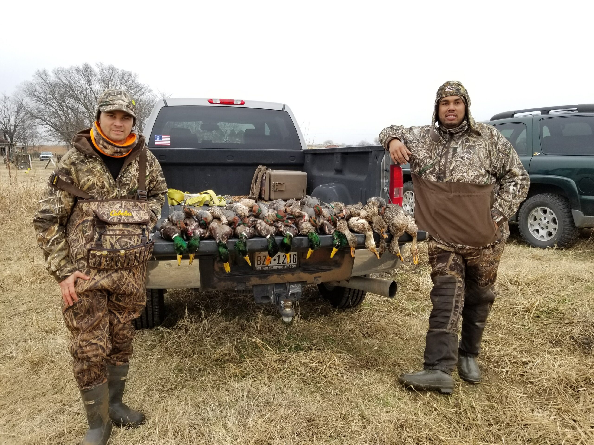

Lake Texoma Stripers
Full-time guides specializing in Texoma striper fishing for memorable days on the water.

Since 1980 · Lake Texoma & Red River
Full-time professional guides for Lake Texoma stripers, Red River trophy fish, and Central Flyway waterfowl. We guarantee fish and provide everything except your license.
Lake Texoma is the premier inland striped bass lake in the southern United States — with some of the most liberal bag limits in Texas or Oklahoma.
Whether you are a lifelong outdoorsman or a first-time guest, we place you in the middle of the action. Michael Beeson and David Beeson run a year-round outfitter business built on experience, the right equipment, and a clear commitment to quality.

Professional outfitting for fishing and hunting on and around Lake Texoma.
Full-time guides specializing in Texoma striper fishing for memorable days on the water.
Below Denison Dam — stripers to 43.1 lbs. Few guides have the knowledge and equipment for this water.
Central Flyway waterfowl on Lake Texoma and the Red River Valley — mallards, pintails, teal, and more.
Striper trips on Lake Texoma and days in the field with Four Seasons.






1230 S. Perry, Denison, Texas 75020 — look for Four Seasons at Grandpappy’s.
Call or email to book fishing or hunting dates. Deposits required to confirm.